4. OSLab Ubuntu 环境配置
重要
开始配置前，请先将宿主机连接校园网，并完成统一身份认证登录。后续安装编译、抓包、虚拟网卡和测试所需的软件时，需要能够正常访问网络；如果未连接校园网或未完成认证，软件安装可能失败。
备注
本节适用于 T2102、T2210、T2507、T2608 实验室中预装的 OSLab Ubuntu 虚拟机。
该虚拟机可以与操作系统实验共用，不需要重新安装或创建新的虚拟机。OSLab 虚拟机固定为 Ubuntu 20.04，登录用户拥有 sudo 权限，并且已经预装 SSH 服务。
只需按照本节补装计算机网络实验所需的工具。两门实验的代码分别放在各自的项目目录中，不会影响彼此的源代码。
虚拟机的启动、网络和基本使用方法请参考 OSLab 虚拟机使用指南。
本节介绍虚拟机启动、校内软件源、实验依赖、代码编译、veth 配置和 VS Code 远程开发；配置完成后，请按照 Linux/veth 使用步骤 运行协议栈并进行集成测试。
警告
T2102 实验室：配置 Host-only IP
此步骤仅适用于 T2102 实验室中使用预装 OSLab 虚拟机的同学。T2210、T2507、T2608 实验室和个人电脑使用者不需要修改 Host-only 网卡。
启动虚拟机前，在 VirtualBox 中完成以下配置：
打开 VirtualBox，先不要启动虚拟机。
点击左侧“工具”，进入“仅主机（Host-Only）网络”页面。
选中
VirtualBox Host-Only Ethernet Adapter。选择“手动配置网卡”，将 IPv4 地址设为
192.168.56.1。点击“应用”保存，然后启动
oslab2虚拟机。

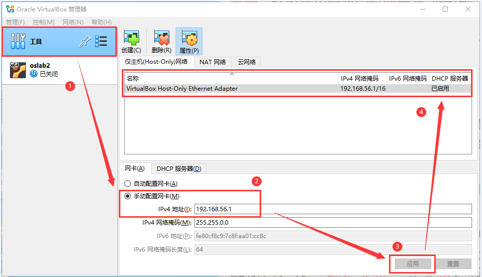
配置 Host-only IP（截图来源：OSLab 虚拟机使用指南）。
OSLab 虚拟机登录信息
用户名 |
|
|---|---|
密码 |
|
远程连接与实验步骤
虚拟机启动后，请参考 OSLab 虚拟机使用指南 的第 2.1 至 2.3 节：获取虚拟机 IP、准备远程连接工具，并使用 VS Code Remote-SSH 连接虚拟机。Host-only 虚拟机地址通常为 192.168.56.xxx，连接时使用第 2.1 节查到的实际地址。
连接成功后，不需要继续参考该指南的第 2.4 节“运行 XV6 实验”。直接回到本页，配置网络实验软件源和依赖，并下载 net-lab 开始计算机网络实验。
4.1. 配置 OSA 校内软件源
以下软件源由学校 开源技术协会（Open Source Association，OSA） 搭建和维护。OSLab 虚拟机在校内网络中访问该镜像站时，网络路径更短，下载 Ubuntu 软件包的速度通常会比访问校外源快很多，可以明显缩短安装实验依赖所需的时间。感谢开源技术协会（OSA）为实验室提供校内镜像服务以及相关技术支持。
下面首次执行 sudo 命令时，终端会要求输入虚拟机登录密码（默认 123456，如果已经修改过密码则输入修改后的密码）。输入时屏幕不会显示字符或星号，这是正常现象；输入完成后按回车即可。
修改软件源前先备份原配置：
sudo cp /etc/apt/sources.list "/etc/apt/sources.list.bak.$(date +%Y%m%d-%H%M%S)"
将 /etc/apt/sources.list 的内容替换为以下配置：
sudo tee /etc/apt/sources.list >/dev/null <<'EOF'
deb https://mirrors.osa.moe/ubuntu/ focal main restricted universe multiverse
deb https://mirrors.osa.moe/ubuntu/ focal-updates main restricted universe multiverse
deb https://mirrors.osa.moe/ubuntu/ focal-backports main restricted universe multiverse
deb https://mirrors.osa.moe/ubuntu/ focal-security main restricted universe multiverse
EOF
然后更新软件包索引：
sudo apt-get update
注意
如果 apt-get update 报告其他第三方软件源失效，请先检查 /etc/apt/sources.list.d/ 中的配置。只有在确认该软件源不再使用后，才禁用或删除对应配置，不要修改本节给出的校内 Ubuntu 源。
4.2. 安装实验依赖
建议一次性安装编译、抓包、虚拟网卡和测试所需的软件：
sudo apt-get install -y \
git ca-certificates make cmake gcc g++ gdb \
libpcap-dev \
iproute2 ethtool \
libreadline-dev libncurses-dev \
wireshark tshark netcat-openbsd curl
注意
安装 wireshark 时，终端可能会先显示 README.Debian 说明，并出现 [More] 提示。此时仍处于分页阅读状态，不是安装报错：
按空格键（
Space）显示下一页，按回车键只向下滚动一行；阅读完毕或不需要查看说明时，按
q退出分页。
退出分页后，安装程序可能询问是否允许普通用户抓包。这个提示可能显示为弹窗，也可能出现在终端中：
Should non-superusers be able to capture packets? [yes/no]
本实验需要使用 Wireshark 或 TShark 实时抓取 veth 网卡上的数据包，请选择 Yes 并确认。如果终端显示选项窗口，可用 Tab 或方向键选中 Yes，再按回车；如果只显示文字提示，则输入 yes 并回车。
其中：
gcc、g++、make、cmake用于编译 net-lab；libpcap-dev用于编译 Linux 下的抓包驱动；iproute2、ethtool用于创建和配置veth；gdb用于普通 GDB 调试；wireshark、tshark用于查看和分析抓包；netcat-openbsd、curl用于 UDP、TCP 和 HTTP 集成测试。
默认情况下不需要安装 gdbserver。只有在 VS Code 中调试需要 Raw Socket 权限的集成程序时才需要，见本页后文说明。
4.3. 下载和编译 net-lab
4.3.1. 在远程 VS Code 中打开 net-lab
先在 Ubuntu 虚拟机的终端中查看 IP 地址：
hostname -I
然后在 Windows 的 VS Code 中使用 Remote-SSH 连接 oslab@<虚拟机IP>，将占位符替换为刚查到的实际 IP；Host-only 地址通常为 192.168.56.xxx。连接步骤可参考 OSLab 虚拟机使用指南 第 2.1 至 2.3 节。如果前面配置软件源和依赖时已经连接了虚拟机，继续使用该远程窗口即可。
连接成功后，在 VS Code 的远程终端中下载实验代码（如果已有 ~/net-lab，则直接进入该目录）：
cd ~
git clone https://git.cs-lab.top/cslab/net-lab.git
cd ~/net-lab

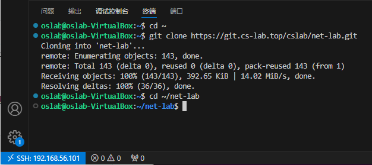
在 VS Code 远程窗口中选择“文件 → 打开文件夹”，打开 /home/oslab/net-lab。确认左下角显示 SSH 远程连接状态，且打开的是 Linux 上的项目目录。
确认 C/C++ 和 CMake Tools 扩展安装在远程主机侧。VS Code 集成终端应显示 Linux shell，并且以下命令能正常执行：
cd ~/net-lab
cmake --version
gdb --version
4.3.2. 修改协议栈 IP
在 VS Code 中打开 ~/net-lab/include/config.h，只修改非 TEST 分支中的 NET_IF_IP。将原来的：
#define NET_IF_IP \
{ \
XX, XX, XX, XX \
} // 自定义网卡ip地址
改成：
#define NET_IF_IP \
{ \
192, 168, 254, 2 \
} // 与 setup_veth.sh 中的 STACK_IP 一致
不要修改 #ifdef TEST 分支中的测试地址。eth_in、arp_test 等组件测试使用离线 pcap 和固定测试配置；udp_server、tcp_server、web_server 等集成测试才使用上面修改的协议栈 IP。
4.3.3. 使用 CMake 配置并编译
保存 config.h 后，在 VS Code 远程终端中执行：
cd ~/net-lab
cmake -S . -B build -DCMAKE_BUILD_TYPE=Debug
cmake --build build
4.4. 配置 veth 环境
在已连接虚拟机的 VS Code 远程窗口中，打开 ~/net-lab 文件夹，点击资源管理器中的“新建文件”，将文件命名为 setup_veth.sh。把下面的脚本完整复制到文件中，按 Ctrl+S 保存。
脚本使用与 纯 Linux/WSL2 环境配置（veth） 相同的默认地址：
#!/bin/bash
# Configuration
STACK_IP="192.168.254.2"
NET_PREFIX="192.168.254"
VETH_USER="veth0"
VETH_KERNEL="veth1"
VETH_USER_IP="${NET_PREFIX}.3/24"
VETH_KERNEL_IP="${NET_PREFIX}.1/24"
SUBNET="${NET_PREFIX}.0/24"
echo "=== Setting up veth pair for Net-Lab ==="
echo "Configuration:"
echo " Stack IP: $STACK_IP"
echo " Prefix: $NET_PREFIX"
echo " Interfaces: $VETH_USER <-> $VETH_KERNEL"
if ip link show "$VETH_USER" > /dev/null 2>&1; then
echo "Removing existing $VETH_USER..."
sudo ip link del "$VETH_USER"
fi
echo "Creating veth pair: $VETH_USER <-> $VETH_KERNEL"
sudo ip link add "$VETH_USER" type veth peer name "$VETH_KERNEL"
echo "Bringing up interfaces..."
sudo ip link set "$VETH_USER" up
sudo ip link set "$VETH_KERNEL" up
echo "Assigning IP $VETH_USER_IP to $VETH_USER"
sudo ip addr add "$VETH_USER_IP" dev "$VETH_USER"
echo "Assigning IP $VETH_KERNEL_IP to $VETH_KERNEL"
sudo ip addr add "$VETH_KERNEL_IP" dev "$VETH_KERNEL"
echo "Deleting kernel route for $VETH_USER..."
sudo ip route del "$SUBNET" dev "$VETH_USER"
echo "Disabling checksum offload..."
sudo ethtool -K "$VETH_USER" rx off tx off
sudo ethtool -K "$VETH_KERNEL" rx off tx off
echo "Configuring IPv6..."
sudo sysctl -w "net.ipv6.conf.$VETH_USER.disable_ipv6=0" > /dev/null
sudo sysctl -w "net.ipv6.conf.$VETH_KERNEL.disable_ipv6=0" > /dev/null
VETH_KERNEL_IP6="fd00::1/64"
echo "Assigning IPv6 $VETH_KERNEL_IP6 to $VETH_KERNEL"
sudo ip -6 addr add "$VETH_KERNEL_IP6" dev "$VETH_KERNEL"
echo "Disabling ARP on $VETH_USER..."
sudo ip link set dev "$VETH_USER" arp off
echo "=== Setup Complete ==="
echo "User Stack Interface: $VETH_USER"
echo "Kernel Interface: $VETH_KERNEL (IP: $VETH_KERNEL_IP)"
echo "UDP/TCP Test: nc $STACK_IP 60000"
echo "Web Test: curl http://$STACK_IP/"
保存后，在虚拟机的终端执行：
cd ~/net-lab
chmod +x setup_veth.sh
sudo ./setup_veth.sh
脚本默认使用以下地址关系：
协议栈 IP（
NET_IF_IP）：192.168.254.2veth0：192.168.254.3veth1：192.168.254.1
协议栈 IP 必须是 192.168.254.2，不能改成 veth0 的地址 192.168.254.3。脚本执行后可以检查接口和路由：
ip addr show veth0
ip addr show veth1
ip route show | grep 192.168.254
虚拟机重启后，veth 设备和相关路由可能会消失，需要重新执行 sudo ./setup_veth.sh。
4.5. 组件测试与调试
eth_in、eth_out、arp_test、ip_test、ip_frag_test、icmp_test、udp_test 和 tcp_test 都是离线组件测试。它们通过 testing/faker/driver.c 或其他 faker 模块读取测试目录中的输入文件，不访问真实网卡，因此调试这些组件不需要执行 setup_veth.sh，也不需要 sudo 或 gdbserver。
注意，udp_test / tcp_test 是离线组件测试；udp_server / tcp_server 则属于后文介绍的在线集成测试，两者不要混淆。
4.5.1. 创建 .vscode 配置目录和文件
请先确认 VS Code 打开的文件夹是 ~/net-lab 项目根目录，而不是 ~/net-lab/build 或其他目录。${workspaceFolder} 在下面的配置中应当指向 ~/net-lab。
可以通过 VS Code 界面创建文件：
在左侧资源管理器中打开
~/net-lab。如果项目根目录下还没有
.vscode文件夹，点击“新建文件夹”创建。文件夹名开头的英文句点.不要漏掉；如果已经存在，则直接打开它，不需要重复创建。如果
.vscode下还没有launch.json，右键点击.vscode文件夹，选择“新建文件”创建；如果已经存在，则直接打开并修改。用同样的方法创建或打开
tasks.json。
也可以在 VS Code 的 Linux 终端中执行：
cd ~/net-lab
mkdir -p .vscode
mkdir -p .vscode 不会覆盖已有的 .vscode 文件夹。
执行后，在 VS Code 资源管理器中创建或打开 .vscode/launch.json 和 .vscode/tasks.json，分别将下面对应的完整内容复制到文件中并保存。

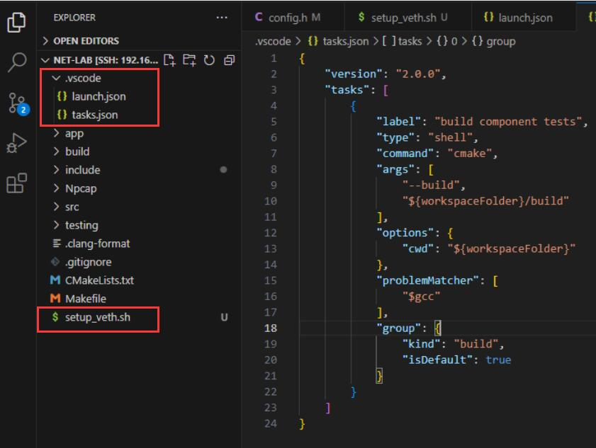
文件位置示例：launch.json 和 tasks.json 位于 .vscode 文件夹内，setup_veth.sh 位于 net-lab 项目根目录。
4.5.2. 填写 launch.json
将以下完整内容复制到 .vscode/launch.json 并保存。前八项用于普通组件测试；最后三项用于连接后文以 sudo gdbserver 启动的集成测试程序。
{
"version": "0.2.0",
"configurations": [
{
"name": "eth_in (Linux component test)",
"type": "cppdbg",
"request": "launch",
"program": "${workspaceFolder}/build/eth_in",
"args": ["testing/data/eth_in"],
"stopAtEntry": false,
"cwd": "${workspaceFolder}",
"environment": [],
"externalConsole": false,
"MIMode": "gdb",
"miDebuggerPath": "/usr/bin/gdb",
"preLaunchTask": "build component tests",
"setupCommands": [
{
"description": "Enable pretty-printing for gdb",
"text": "-enable-pretty-printing",
"ignoreFailures": true
}
]
},
{
"name": "eth_out (Linux component test)",
"type": "cppdbg",
"request": "launch",
"program": "${workspaceFolder}/build/eth_out",
"args": ["testing/data/eth_out"],
"stopAtEntry": false,
"cwd": "${workspaceFolder}",
"environment": [],
"externalConsole": false,
"MIMode": "gdb",
"miDebuggerPath": "/usr/bin/gdb",
"preLaunchTask": "build component tests",
"setupCommands": [
{
"description": "Enable pretty-printing for gdb",
"text": "-enable-pretty-printing",
"ignoreFailures": true
}
]
},
{
"name": "arp_test (Linux component test)",
"type": "cppdbg",
"request": "launch",
"program": "${workspaceFolder}/build/arp_test",
"args": ["testing/data/arp_test"],
"stopAtEntry": false,
"cwd": "${workspaceFolder}",
"environment": [],
"externalConsole": false,
"MIMode": "gdb",
"miDebuggerPath": "/usr/bin/gdb",
"preLaunchTask": "build component tests",
"setupCommands": [
{
"description": "Enable pretty-printing for gdb",
"text": "-enable-pretty-printing",
"ignoreFailures": true
}
]
},
{
"name": "ip_test (Linux component test)",
"type": "cppdbg",
"request": "launch",
"program": "${workspaceFolder}/build/ip_test",
"args": ["testing/data/ip_test"],
"stopAtEntry": false,
"cwd": "${workspaceFolder}",
"environment": [],
"externalConsole": false,
"MIMode": "gdb",
"miDebuggerPath": "/usr/bin/gdb",
"preLaunchTask": "build component tests",
"setupCommands": [
{
"description": "Enable pretty-printing for gdb",
"text": "-enable-pretty-printing",
"ignoreFailures": true
}
]
},
{
"name": "ip_frag_test (Linux component test)",
"type": "cppdbg",
"request": "launch",
"program": "${workspaceFolder}/build/ip_frag_test",
"args": ["testing/data/ip_frag_test"],
"stopAtEntry": false,
"cwd": "${workspaceFolder}",
"environment": [],
"externalConsole": false,
"MIMode": "gdb",
"miDebuggerPath": "/usr/bin/gdb",
"preLaunchTask": "build component tests",
"setupCommands": [
{
"description": "Enable pretty-printing for gdb",
"text": "-enable-pretty-printing",
"ignoreFailures": true
}
]
},
{
"name": "icmp_test (Linux component test)",
"type": "cppdbg",
"request": "launch",
"program": "${workspaceFolder}/build/icmp_test",
"args": ["testing/data/icmp_test"],
"stopAtEntry": false,
"cwd": "${workspaceFolder}",
"environment": [],
"externalConsole": false,
"MIMode": "gdb",
"miDebuggerPath": "/usr/bin/gdb",
"preLaunchTask": "build component tests",
"setupCommands": [
{
"description": "Enable pretty-printing for gdb",
"text": "-enable-pretty-printing",
"ignoreFailures": true
}
]
},
{
"name": "udp_test (Linux component test)",
"type": "cppdbg",
"request": "launch",
"program": "${workspaceFolder}/build/udp_test",
"args": ["testing/data/udp_test"],
"stopAtEntry": false,
"cwd": "${workspaceFolder}",
"environment": [],
"externalConsole": false,
"MIMode": "gdb",
"miDebuggerPath": "/usr/bin/gdb",
"preLaunchTask": "build component tests",
"setupCommands": [
{
"description": "Enable pretty-printing for gdb",
"text": "-enable-pretty-printing",
"ignoreFailures": true
}
]
},
{
"name": "tcp_test (Linux component test)",
"type": "cppdbg",
"request": "launch",
"program": "${workspaceFolder}/build/tcp_test",
"args": ["testing/data/tcp_test"],
"stopAtEntry": false,
"cwd": "${workspaceFolder}",
"environment": [],
"externalConsole": false,
"MIMode": "gdb",
"miDebuggerPath": "/usr/bin/gdb",
"preLaunchTask": "build component tests",
"setupCommands": [
{
"description": "Enable pretty-printing for gdb",
"text": "-enable-pretty-printing",
"ignoreFailures": true
}
]
},
{
"name": "udp_server (Linux integration test via gdbserver)",
"type": "cppdbg",
"request": "launch",
"program": "${workspaceFolder}/build/udp_server",
"args": [],
"stopAtEntry": true,
"cwd": "${workspaceFolder}",
"environment": [],
"externalConsole": false,
"MIMode": "gdb",
"miDebuggerPath": "/usr/bin/gdb",
"miDebuggerServerAddress": "localhost:1234",
"setupCommands": [
{
"description": "Enable pretty-printing for gdb",
"text": "-enable-pretty-printing",
"ignoreFailures": true
}
]
},
{
"name": "tcp_server (Linux integration test via gdbserver)",
"type": "cppdbg",
"request": "launch",
"program": "${workspaceFolder}/build/tcp_server",
"args": [],
"stopAtEntry": true,
"cwd": "${workspaceFolder}",
"environment": [],
"externalConsole": false,
"MIMode": "gdb",
"miDebuggerPath": "/usr/bin/gdb",
"miDebuggerServerAddress": "localhost:1234",
"setupCommands": [
{
"description": "Enable pretty-printing for gdb",
"text": "-enable-pretty-printing",
"ignoreFailures": true
}
]
},
{
"name": "web_server (Linux integration test via gdbserver)",
"type": "cppdbg",
"request": "launch",
"program": "${workspaceFolder}/build/web_server",
"args": [],
"stopAtEntry": true,
"cwd": "${workspaceFolder}",
"environment": [],
"externalConsole": false,
"MIMode": "gdb",
"miDebuggerPath": "/usr/bin/gdb",
"miDebuggerServerAddress": "localhost:1234",
"setupCommands": [
{
"description": "Enable pretty-printing for gdb",
"text": "-enable-pretty-printing",
"ignoreFailures": true
}
]
}
]
}
4.5.3. 填写 tasks.json
将以下完整内容复制到 .vscode/tasks.json 并保存：
{
"version": "2.0.0",
"tasks": [
{
"label": "build component tests",
"type": "shell",
"command": "cmake",
"args": [
"--build",
"${workspaceFolder}/build"
],
"options": {
"cwd": "${workspaceFolder}"
},
"problemMatcher": [
"$gcc"
],
"group": {
"kind": "build",
"isDefault": true
}
}
]
}
4.5.4. 配置说明与按需编译
组件测试和集成测试的配置方式不同：
前八个组件测试使用普通 GDB 启动；
program指向build目录下对应的可执行文件，args传入对应的测试数据目录，而不是直接传入in.pcap或in.txt文件；eth_in、eth_out、arp_test、ip_test、icmp_test、udp_test和tcp_test默认读取各自目录中的in.pcap；ip_frag_test默认读取testing/data/ip_frag_test/in.txt；udp_server、tcp_server和web_server的args必须保持为空；它们通过miDebuggerServerAddress连接本机localhost:1234上的 gdbserver，而非由 VS Code 直接启动；tasks.json编译整个build目录，因此切换组件时不需要修改tasks.json。
默认的 tasks.json 会编译整个 build 目录。但如果希望只编译某个组件，应修改该任务的 args 数组。
例如，调试 eth_in 时，将 tasks.json 原来的：
"args": [
"--build",
"${workspaceFolder}/build"
]
替换为：
"args": [
"--build",
"${workspaceFolder}/build",
"--target",
"eth_in"
]
此时 --target 后面的名称必须与 launch.json 中 program 的可执行文件名一致。使用 --target 时，每次切换到其他组件都要同步修改这里；如果不想重复修改，保留默认的全量编译配置即可。
4.5.5. 运行调试
在 VS Code 中运行调试：
在 VS Code 左侧打开“运行和调试”。
在顶部配置下拉菜单中选择要调试的协议对应的测试配置：调试哪个协议，就选择哪个协议的配置。例如，调试 ARP 协议时选择
arp_test (Linux component test)，调试以太网协议时选择eth_in或eth_out配置。打开对应的源文件，在希望程序停下的可执行语句旁设置断点，然后按
F5启动调试。

调试某个协议时，应在图示下拉菜单中选择该协议对应的配置；例如调试 arp_out() 时选择 arp_test。
如果选择了其他协议的配置，程序可能不会执行当前要调试的函数，断点也就不会命中。例如，调试 src/arp.c 中的 arp_out() 时选择 eth_in 或 eth_out，这两个测试使用的是模拟 ARP 函数，不会执行 src/arp.c 中的 arp_out()。若选择了对应配置仍未停下，请检查断点是否设在函数内的可执行语句上；仅有 // TO-DO 注释的行无法设置有效断点。

“运行和调试”入口及断点位置示例。
4.5.6. 命令行验证
也可以在 VS Code 远程终端中运行组件测试：
cd ~/net-lab
./build/eth_in testing/data/eth_in
./build/arp_test testing/data/arp_test
./build/ip_frag_test testing/data/ip_frag_test
如果提示找不到输入文件，优先检查以下项目：
VS Code 的
workspaceFolder是否为net-lab根目录；launch.json的program和args是否属于同一个组件；对应测试目录是否存在，且
args传入的是目录路径；ip_frag_test是否使用了testing/data/ip_frag_test，该目录中的输入文件名是in.txt，不是in.pcap。
4.6. UDP、TCP 与 Web 服务的测试和调试
组件测试（如 arp_test、ip_test）读取离线数据，不需要 veth 或 sudo。udp_server、tcp_server、web_server 是在线集成测试，必须以 root 权限运行；CMake Tools 的普通“运行”不会自动提权。
4.6.1. 测试环境准备
在 VS Code 远程终端中先执行一次：
cd ~/net-lab
sudo ./setup_veth.sh
然后每次只启动一个服务，并在 Ubuntu 虚拟机内运行对应客户端。192.168.254.2 是虚拟机内部 veth 网络的协议栈 IP，Windows 宿主机不能直接访问。
4.6.2. UDP 服务测试
在一个远程终端启动服务：
sudo ./build/udp_server

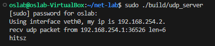
UDP 服务端启动并收到客户端发送的数据。
在另一个远程终端运行客户端，输入文本并回车：
nc -u -v 192.168.254.2 60000

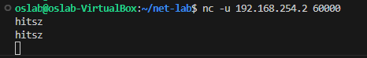
UDP 客户端发送数据并收到服务端回显。
服务端应打印收到的内容，客户端应收到相同的回显。测试完成后，先在运行 nc 的终端按 Ctrl+C 退出客户端，再回到运行 udp_server 的终端按 Ctrl+C 停止服务。
4.6.3. TCP 服务测试
在服务端终端启动 TCP 服务：
sudo ./build/tcp_server

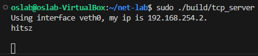
TCP 服务端启动并收到客户端发送的数据。
在另一个远程终端运行：
nc -v 192.168.254.2 60000

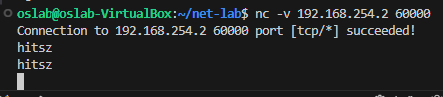
TCP 客户端连接成功，发送数据后收到服务端回显。
输入文本并回车，客户端应收到回显，服务端也应打印收到的内容。测试完成后，先在运行 nc 的终端按 Ctrl+C 退出客户端，再回到运行 tcp_server 的终端按 Ctrl+C 停止服务。
4.6.4. HTTP 服务测试
在服务端终端启动 Web 服务：
sudo ./build/web_server
在 Ubuntu 虚拟机桌面内打开浏览器，访问 http://192.168.254.2/；

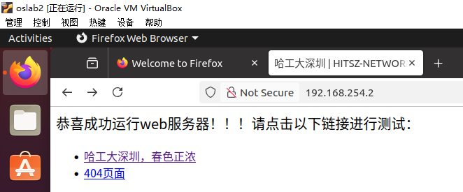
在 OSLab 虚拟机内访问 Web 服务首页。
也可以在另一个远程终端运行：
curl http://192.168.254.2/
浏览器或终端应显示 Web Server 返回的首页内容。测试完成后停止客户端，再回到服务端终端按 Ctrl+C 停止服务。虚拟机重启后，需重新执行 sudo ./setup_veth.sh；若出现 pcap_open_live 或 Operation not permitted，请确认服务是用 sudo 启动的。
4.6.5. 断点调试
先检查是否已安装 gdbserver：
gdbserver --version
如果显示版本号，说明已安装；如果提示找不到命令，再执行 sudo apt-get install -y gdbserver。
之后将服务启动命令改为以下形式（以 UDP 为例）：
cd ~/net-lab
sudo gdbserver localhost:1234 ./build/udp_server
调试 TCP 或 HTTP 时，将命令末尾分别替换为 ./build/tcp_server 或 ./build/web_server。
终端显示 Listening on port 1234 后，在 VS Code“运行和调试”中选择对应的 udp_server (Linux integration test via gdbserver)、tcp_server (Linux integration test via gdbserver) 或 web_server (Linux integration test via gdbserver) 配置并按 F5；若停在入口断点，继续运行后按相应小节测试。结束时停止调试，并在 gdbserver 终端按 Ctrl+C。

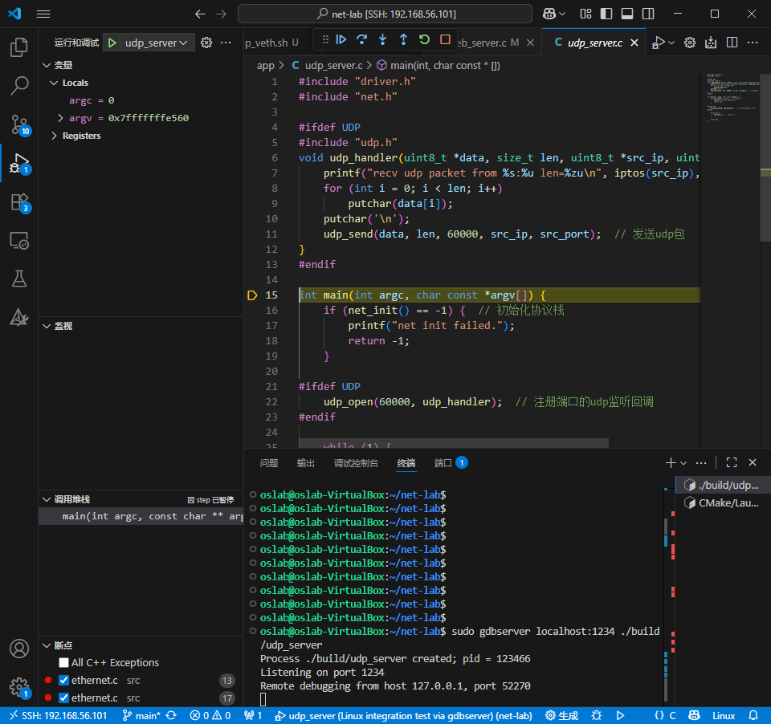
VS Code 连接 gdbserver 并在 udp_server 中命中断点。
4.6.6. Wireshark 抓包
抓包前确认已经运行 sudo ./setup_veth.sh，并且 veth0、veth1 已创建。Wireshark 需要在 OSLab Ubuntu 虚拟机内打开；Windows 宿主机上的 Wireshark 看不到虚拟机内部的 veth 流量。
在 Ubuntu 虚拟机桌面中打开终端，启动 Wireshark：
sudo wireshark
在接口列表中选择 veth0 开始抓包。veth0 连接用户态协议栈，是本实验推荐的抓包接口；也可以选择 veth1 查看 Linux 内核侧的流量。开始抓包后，再在另一个终端运行 UDP、TCP 或 HTTP 测试；测试完成后停止抓包并查看报文。

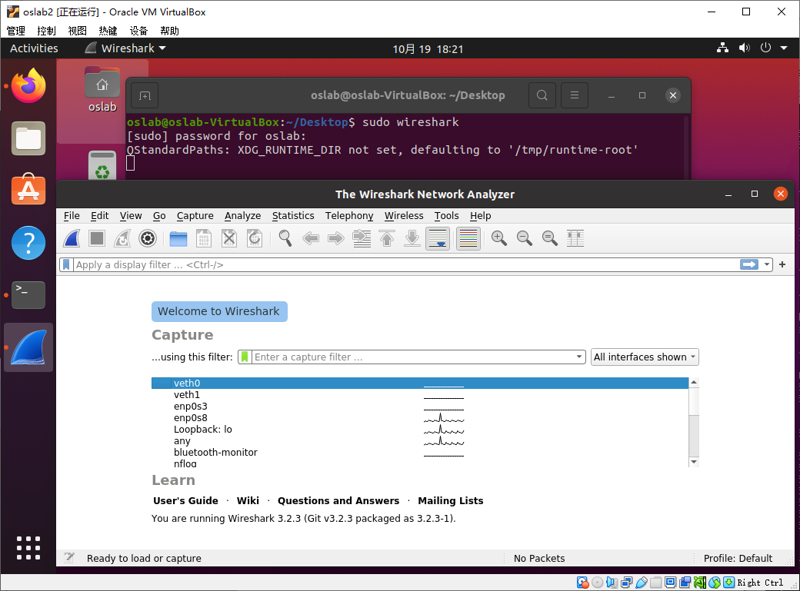
使用 sudo wireshark 启动

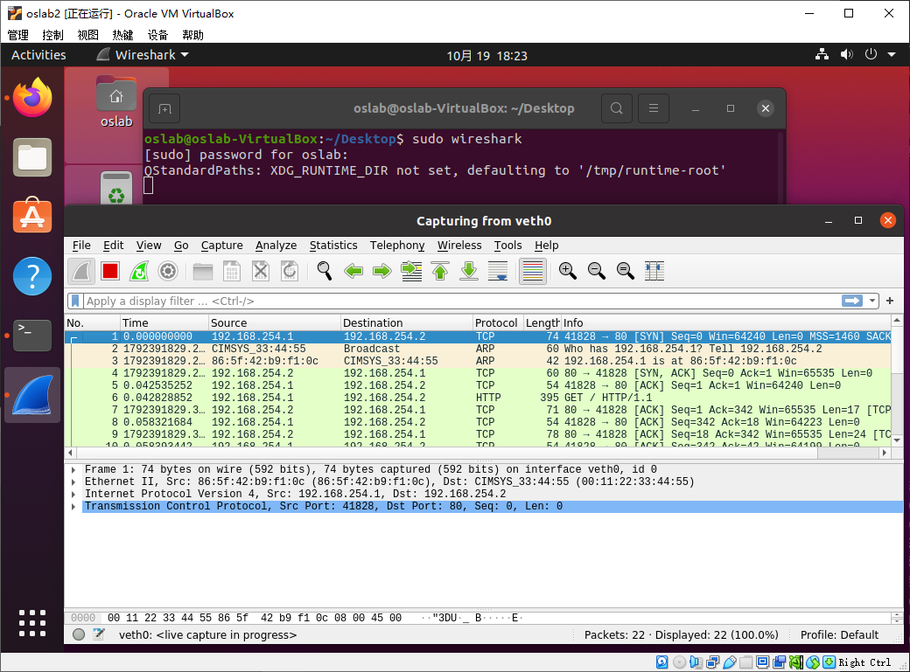
使用 sudo wireshark 在 veth0 上抓取 HTTP 测试报文。